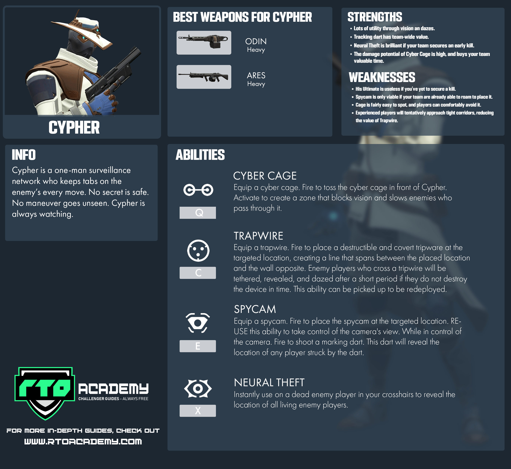
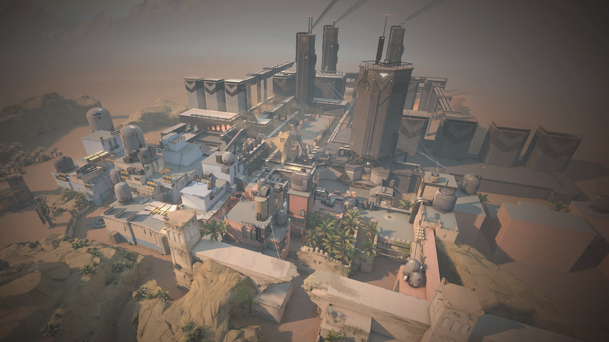

About Cypher
The Moroccan information broker, Cypher is a one-man surveillance network who keeps tabs on the enemy’s every move.No secret is safe. No maneuver goes unseen. Cypher is always watching.
Ability Cost
- Trapwire (C – 200 credits)
- Cyber Cage (Q – 100 credits )
- Spycam (E – free, can recall to recast)
Cypher home map
Two sites. No middle. Gotta pick left or right. What’s it going to be then? Both offer direct paths for attackers and a pair of one-way teleporters make it easier to flank.
